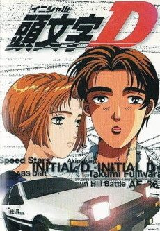
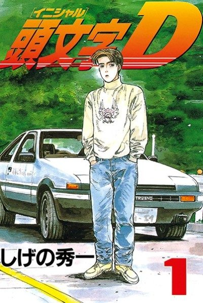

Anime
Manga1998 · Action, Drama, Sports
Initial D 1st Stage
頭文字[イニシャル]D
AniList8.2
Animeter—
5 seasons81 ep
MangaUnclear
Is it worth pushing through?
Built from what visitors report across all 5 seasons (81 episodes).
Loading reports…Checking what other people said about this one.
Sign in with your email at the top of the page to add your report.